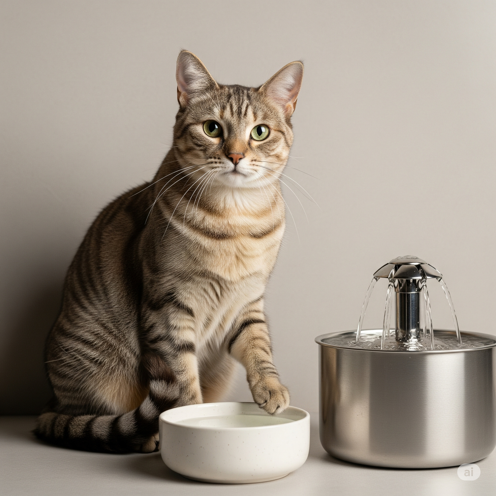

Doenças dos Rins em Gatos: Guia Prático para Tutores

Por Plantas & Gatos - Seu guia de confiança sobre saúde felina e convivência segura
Por que este guia é importante para você?
Se você tem um gato ou está pensando em adotar um, precisa saber sobre as doenças dos rins. Elas são super comuns em felinos, especialmente nos mais velhinhos, e podem aparecer de forma silenciosa. Mas calma! Com as informações certas, você pode prevenir, identificar cedo e cuidar muito bem do seu bichano.
Os rins são como os "filtros" do corpo do seu gato. Eles limpam o sangue, controlam a quantidade de água no corpo e ainda produzem hormônios importantes. Quando param de funcionar direito, é como se a "casa" do seu gato começasse a ficar bagunçada por dentro.
Como funcionam os rins do seu gato?
Os gatos são verdadeiros mestres em economizar água - uma herança dos ancestrais que viviam no deserto. Por isso, os rins deles são super eficientes. Mas essa eficiência tem um lado ruim: quando algo dá errado, o gato consegue "disfarçar" o problema por muito tempo, até que já esteja bem sério.
Imagine os rins como duas esponjas mágicas que filtram o sangue 24 horas por dia. Eles pegam as coisas ruins (como toxinas) e jogam fora através da urina, mas guardam as coisas boas que o corpo precisa. Também controlam a pressão arterial e ajudam na produção dos glóbulos vermelhos do sangue.
Tipos de problemas renais
Problema agudo (aparece de repente)
É quando os rins "param" rapidamente, em alguns dias. Geralmente acontece por:
- Envenenamento: Seu gato comeu ou bebeu algo tóxico (como lírios, anticongelante, alguns remédios)
- Infecção grave: Uma infecção que se espalhou pelo corpo
- Desidratação severa: Quando o gato perde muita água do corpo
- Cirurgias complicadas: Problemas durante anestesias
Os sinais aparecem rápido e são bem claros: vômito, diarreia, o gato fica "largado", para de fazer xixi ou faz muito pouco, e pode até ter convulsões. É emergência veterinária!
Problema crônico (vai piorando devagar)
É quando os rins vão "cansando" aos poucos, ao longo de meses ou anos. É o mais comum, especialmente em gatos idosos. Cerca de metade dos gatos com mais de 15 anos tem algum grau desse problema.
Acontece por várias razões: idade avançada, genética (alguns gatos nascem mais propensos), pressão alta, diabetes, infecções de urina repetidas, ou até problemas nos dentes que não foram tratados.
O que é azotemia? (Parece complicado, mas não é!)
Azotemia é um nome chique para dizer que tem "lixo" demais no sangue do gato. Normalmente, os rins jogam esse "lixo" (ureia e creatinina) fora através da urina. Quando não conseguem fazer isso direito, esses compostos se acumulam no sangue.
Existem três tipos:
- Antes dos rins: O problema não está nos rins, mas na circulação do sangue (como desidratação)
- Nos rins: Os rins mesmo estão danificados
- Depois dos rins: Tem alguma obstrução impedindo a urina de sair
Os estágios da doença renal crônica
Os veterinários classificam a doença em 4 estágios, baseados num exame de sangue chamado creatinina:
- Estágio 1 - Início silencioso: O gato ainda parece normal, mas já há sinais de que algo não vai bem nos rins.
- Estágio 2 - Primeiros sinais: O gato pode começar a beber mais água e fazer mais xixi.
- Estágio 3 - Fica mais visível: Sinais claros: muito xixi, muita sede, perda de peso, come menos.
- Estágio 4 - Situação grave: O gato fica debilitado, vomita mais, tem mau hálito forte, fica apático.
Como identificar se seu gato tem problemas nos rins?
Sinais que você pode notar em casa:
Os primeiros sinais (preste atenção!):
- Bebe água demais e faz xixi demais
- A caixa de areia fica encharcada mais rápido
- Começa a fazer xixi fora da caixa
Sinais que vão aparecendo:
- Perde peso mesmo comendo normal
- Fica mais "parado", brinca menos
- O pelo fica sem brilho
- Come menos ou fica "enjoado"
- Procura lugares frescos para deitar
Sinais mais graves:
- Vômitos frequentes
- Mau hálito com cheiro de amônia
- Fica muito fraco
- Pode ter feridas na boca
- Em casos extremos, convulsões
Como o veterinário confirma o diagnóstico?
- Exames de sangue: creatinina, ureia e outros.
- Exame de urina: concentração, proteína e infecção.
- Ultrassom: tamanho e formato dos rins.
- Pressão arterial: muitos gatos renais têm hipertensão.
Tratamento: como ajudar seu gato a viver melhor
Mudanças na alimentação
Rações especiais para gatos com problemas renais: menos fósforo, proteínas de qualidade e mais ômega-3.
Hidratação é fundamental
- Várias vasilhas de água fresca
- Fontes de água corrente
- Alimentos úmidos
- Soro sob a pele em casos graves
Medicamentos podem ajudar
- Controle da pressão
- Anti-náusea
- Suplementos
- Quelantes de fósforo
Prevenção: o melhor remédio
Cuidados desde filhote
- Hidratação sempre
- Ração de qualidade
- Manter peso ideal
Cuidados com o ambiente
- Remover plantas tóxicas (lírios, azaleias)
- Guardar produtos de limpeza
- Cuidado com anticongelante
Checkups regulares
Jovens: anual | 7-10 anos: a cada 6-8 meses | Idosos: a cada 4-6 meses
Cuide dos dentes também!
Infecções dentárias podem chegar aos rins.
Vida com doença renal: é possível ser feliz!
- Mais caixas de areia
- Água e comida acessíveis
- Ambiente calmo
Sinais de alerta para correr ao veterinário
- Parou de comer há mais de 24h
- Vômitos frequentes
- Não consegue urinar
- Apático ou escondido
- Dificuldade para respirar
Qualidade de vida em primeiro lugar
- Seguir tratamento
- Observar diariamente
- Manter consultas
- Dar carinho
Novidades e esperanças
- Novos medicamentos
- Dietas específicas
- Tratamentos com células-tronco
- Exames precoces
Mitos que você deve ignorar
- "Gato bebe pouco água, é normal"
- "Ração de supermercado é igual à terapêutica"
- "Se está comendo, está bem"
- "Só gatos velhos têm problemas renais"
Seu papel como tutor consciente
Você é o melhor "detetive" para identificar mudanças no seu gato. Detectar cedo salva vidas!
Enfim
Cuidar de um gato com doença renal pode parecer assustador, mas é possível proporcionar uma vida feliz com acompanhamento veterinário. Prevenção é o melhor caminho.
⚠️ IMPORTANTE: Sempre…sempre consulte veterinários. Eles são a fonte mais confiável para diagnosticar com precisão, planejar o tratamento e acompanhamentos de nossos bichanos!!!
← Voltar para o blog